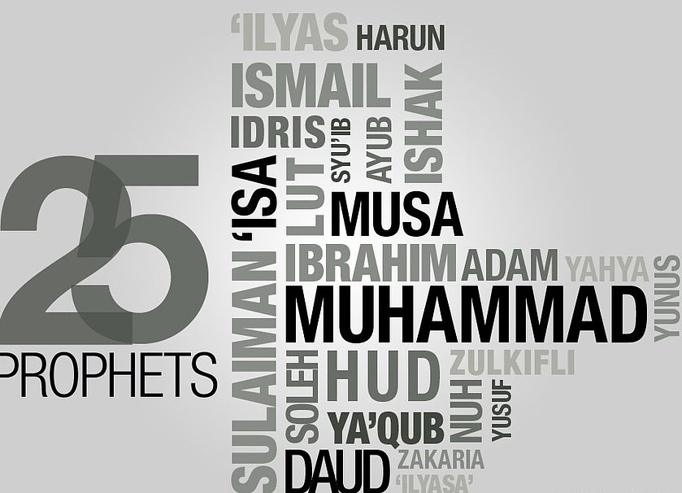

What is Islam?
Islam comes from the Arabic root word which stands for both submission and peace. The word Islam means "submission to the will of Allah." It establishes the principle that by surrending one's will to the will of Allah, one can let go of all the fears and earthly temptations so that they can finally find peace in their soul. It is not wealth nor riches that will bring us a sense of harmony and balance. Only submitting to our Creator can bring those things. The Prophet Muhammad peace and blessing be upon him once said, "True wealth does not come from an abundance of things. True welath comes from a contented heart."
In Islam there are seven main beliefs, five main practices, and three main duties.
The seven main beliefs are:
Believing in Allah, His angels, His scriptures, His messengers, the Last Day, and Divine Predestination
The five main practices are:
Shahadah: Declaring there is no God bu Allah and that Muhammad is the last messenger
Salah: establishing prayer
Zakat: giving charity
Sawm: fasting during the month of Ramadan
Hajj: pilgrimage to the holy Kaabah in Mecca
The three main duties are:
Dawah: calling others to Islam
Jihaad: striving for Allah's cause
Encouraging good deeds while forbidding evil
Islam is a complete way of life for any man or woman to follow. It touches upon our minds, emotions, senses, and feelings. Islam is our guide in this troubled world. It gives us hope to strive for the betterment of ourselves and the world around us.
Allah said, "Declare to them, O Muhammad, 'If you love Allah follow me (Muhammad). Allah will love you and forgive your sins. For Allah is All-Forgiivng adn All- Mercifiul.'"
Beliefs
The Five Pillars of Islam
The 5 pillars of Islam are it's core components. These are everything one needs to do as a Muslim. Shahadah, Salah, Zakat, Hajj, Sawm

The Seven Main Beliefs
Belief in His books: Muslims believe that Allah has revealed Holy Books or scriptures to prophets and messengers as a means of guiding humankind back to the right path. Some of the Holy Scriptures include:
The Zabur (The Psalms): revealed to Prophet Dawud (David)
The Torat (The Old Testament): revealed to Prophet Musa (Moses)The Injeel (The New Testament): revealed to Prophet Isa (Jesus)The Qur'an (The Final Testament): revealed to Prophet Muhammad
Belief in the Angels of Allah: Muslims believe in Angels, unseen beings who worship Allah and carry out orders for Him
- Angel Jibreel (Gabriel): the Angel of Revelation, carries the message of Allah from the Heavens to the Prophet
- Angel Mikail (Michael): the Angel of Mercy, provides nourishments for bodies and souls, responsible for bringing rain and thunder to Earth
- Angel Israfil (Raphael): the Angel who will blow the trumpet at Yawm al-Qiyamah (Day of Judgement).
- Angel Azrael: the Angel of Death, the Keeper of Hell. Responsible for parting the soul from the body
Belief in Yawm al-Qiyamah (the Day of Judgement): Muslims beleive that humans will face a day when they will be judged by the deeds they commited in this life. Those who followed Allah's commandments and performed lots of good deeds will be rewarded, and those who ignored Allah's commandments, turned away from it, and performeda multitude of evil acts without seeking repentance will be punished.
Belief in Qadr (Divine Pre-destination): Belief in the omnipotence and omniscience of Allah. This mandates us to believe and accept any good and any evil that befalls us as coming from the perfect plan of Allah; and Allah is the best of planners.
The Prophets
- Adam: First Prophet of Islam, and the first human being to walk the Earth.
- Idris (Enoch): He is found in the Old Testemant as Enoch. In the Quran it says that Allah exaltred Idris to a lofty station and Muslims believed he lived at a time when monotheisesm was very rare.
- Nuh (Noah): According to Islam, it was his belief in Allah that led him to being selected to build the Ark. His name also appears in the 71st surah of the Quran.
- Hud (Eber): He was sent by Allah to remind the people about Allah. He is one of the 5 Arab prophets. Also, has a whole 11th chapter of the Quran dedicated to him.
- Salih (Salah): He was ordered by Allah to leave behind his people after they disobeyed Allah.
- Lut (Lot): He preached against homosexuality in Sodom and Gomarrah, only to be mocked and ignored. Afterwards the nation was destroyed by Allahs command.
- Ibrahim (Abraham): He is credited with building the Kabba in Mecca, and is one of the most significant prophets to Muslims. Prophet Ibrahim had a dream that Allah told him to scarifice his son Ismail. He told his son and his son had no obligation to this, and as soon as Ibrahim (S.A.W) was going to kill him, the angels came and told Ibraham that Allah was testing his faith. Afterwards Ismail was switched with a camel for sacrifice.
- Ismail (Ishmael): Ismail and his mothers search for water around Mecca led Allah to reveal Zam Zam water, which is the said to be a miraculously generated water source straight from Allah.
- Ishaq (Isaac): Second born to Ibrahim (A.W.S.), he became prophet of Canaan. He carried on the legacy of his father Ibrahim, alongside his brothers.
- Yaqub (Jacob): He was of the company of the elect and the good. He is the son of Ishaq and the grandson of Ibrahim. Throughout his whole life he was committed to worshiping and spreading the words of Allah.
- Yusuf (Joseph): The son of Yaqub and great grandson of Ibrahim, he was the advisor to the pharaoh of Egypt. He was beleived to predict the future throught his dreams. His brothers jealous of him, threw him in a well, and told their father that he had passed away. Yusuf was afraid of the well, but he knew Allah was with him. Yusuf is the name of the 12th surah in the Quran.
- Ayub (Job): He was rewarded a Fountain of Youth, which removed all illness except death.
- Shuaib (Jethro): Was a descendent of Ibrahim. He was appointed by Allah to guide the poeple of Midian and Aykah. When the eople of the region failed to listen to him, their villages were destroyed by Allah.
- Musa (Moses): He is significant for revealing the Torah. The Quran says Musa realized his conenction with Allah after recieving commands at Mount Sinai. At the end of his life, Musa chose to die to be closer to Allah
- Harun (Aaron): served as an assisitant to his brother Musa. He recieved the task to save Israelis living under the Egyptian pharaoh.
- Dhul Kifl (Ezekiel): He is described as a righteous and patient. He is often identified with the Old Testament.
- Dawud (David): Allah revealed the Zabur (Psalms) to him.
- Sulaiman (Solomon): he recieved power to manipulate nature, and the power to communicate with animals. He is known for his honesty and fairness, and he also headed a kingdom in the southern part of Arabia.
- Iliyas (Elijah): He attempted to convince the people of Israel of the existence of One God.
- Alyasa (Elisha): He took over the task of leading the Israelis after the death of Iliyas.
- Yunus (Jonah): Allah told Yunus to help the people of Ninevah towars the path of Allah. He was riducled and ignored, which led him to abandon them and leave the town. Doing so, he was swallowed by a whale, and in the stomach Yunus prayed and repepented, until the whale spewed the prophet out onto a dry land. A land where there was no source of food. However, Allah granted him a fruit tree to nourish him.
- Zakariya (Zechariah): He prayed to Allah asking for a son, since his wife could not grant him one. Yahya ibn Zakariya (John the Baptist) was born under Allahs commands.
- Yahya (John): He prayed to god for a son to continue his legacy of guiding people towards Islam.
- Isa (Jesus): In the Quran it is clearly stated that Isa is not God, nor the son of God. Rather, he is a prophet, and messenger. In Islam it is viewed that he was not crucified on the cross, but instead he is in Heaven, waiting to return to defeat the Masih ad Dajjal (the false Messiah).
- Muhammad: The last prophet and also considered the Imam of all prophets. He preached the unity of the religon since Adam. Muhammad (SAW) was born in Mecca where he was a well travelled merchant. At the age of 40, during a trip, Muhammad (S.A.W) began to recieve and recite versus from Allah. He quickly began to spread the message. He was atrustworthy, humble, and merciful man. Muslims do not view Muhammad (S.A.W) as a beginner of a new religon. Its a continuation of the other major religons. He is the greatest man to walk these grounds.